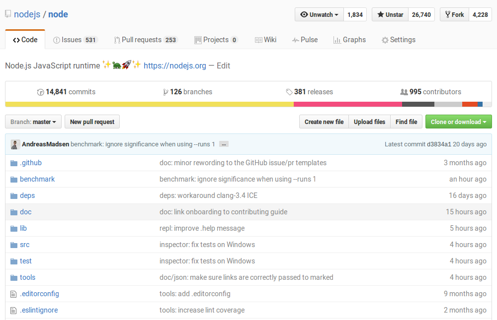

class: center, middle # Code & Learn at Node Interactive North America 2016 Your first pull request to Node.js core --- # Core repository: https://github.com/nodejs/node  --- # Lifecycle of a PR, part I Before you open a pull request: - Get the necessary tools if you don’t already have - Do the changes you want to make - Build node and make sure all tests still pass - Commit the changes --- # Lifecycle of a PR, part II After you open a pull request: - You will probably receive comments from reviewers - Address them by adding new commits or amending existing ones - There is no automated CI, it will be kicked off manually by a collaborator - This may take a bit of time, there are only so many machines available - Infrastructure hiccups are not uncommon but most CI runs are mostly green these days - At least one Node.js core collaborator has to sign off on the pull request, by commenting “LGTM” and/or using Github’s review feature - There’s a minimum waiting period of 48/72 hours for non-trivial changes - Just in case: If there is no movement on a PR for a few days, feel free to bump it --- # Setup - You need: A Github account, Git, Python, a compiler - Fork `nodejs/node` - Clone your fork --- # General structure: - `deps/` — Dependencies (V8, libuv, zlib, etc.) - `doc/api/` – The API documentation (aka https://nodejs.org/api/) - `lib/` – JS source files (everything that can be `require()`d) - `src/` – C++ source files - `test/parallel/` – (Almost all) Tests! --- # Guides for contributing - `CONTRIBUTING.md` – General contributing guide - Explains how a commit message should look like - `doc/guides/writing_tests.md` – Especially helpful when writing new tests! - `test/README.md` – Explains the `common` API used in our tests --- # Wait for cloning to finish --- # Compiling ```console $ ./configure $ make -j8 # Use -jN if your machine has N cores $ ./node > process.version 'v8.0.0-pre' ``` (Windows: `vcbuild nosign`) --- # Building the docs ```console $ make doc-only # or $ make doc ``` → Output in `out/doc/api` --- # Testing your changes ```console $ make -j8 test ``` (Windows: `vcbuild test`) --- class: center, middle # Go!